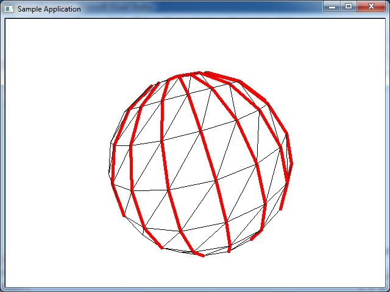
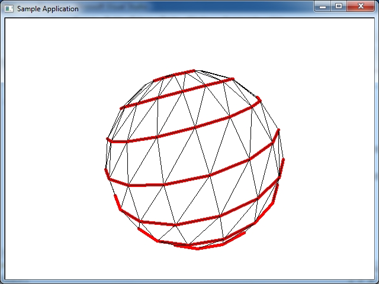
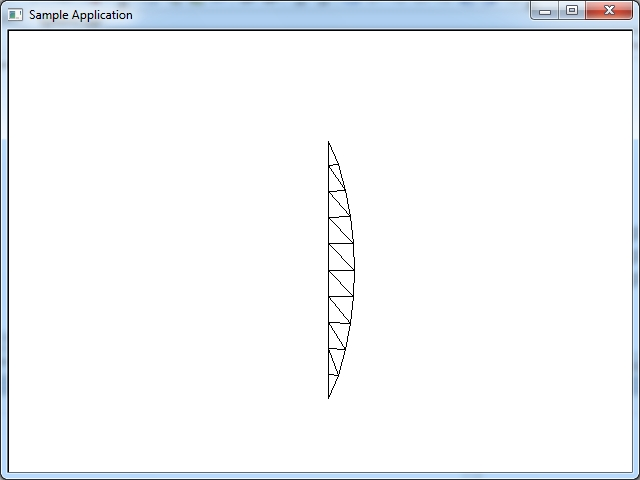
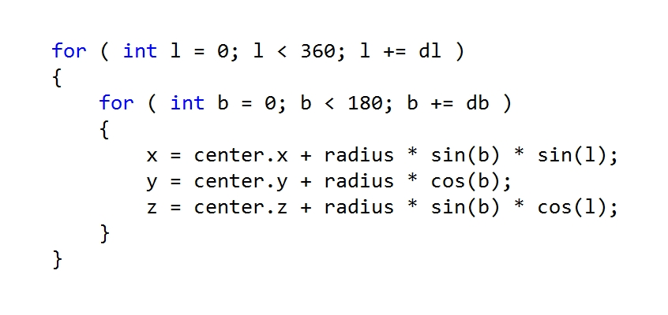
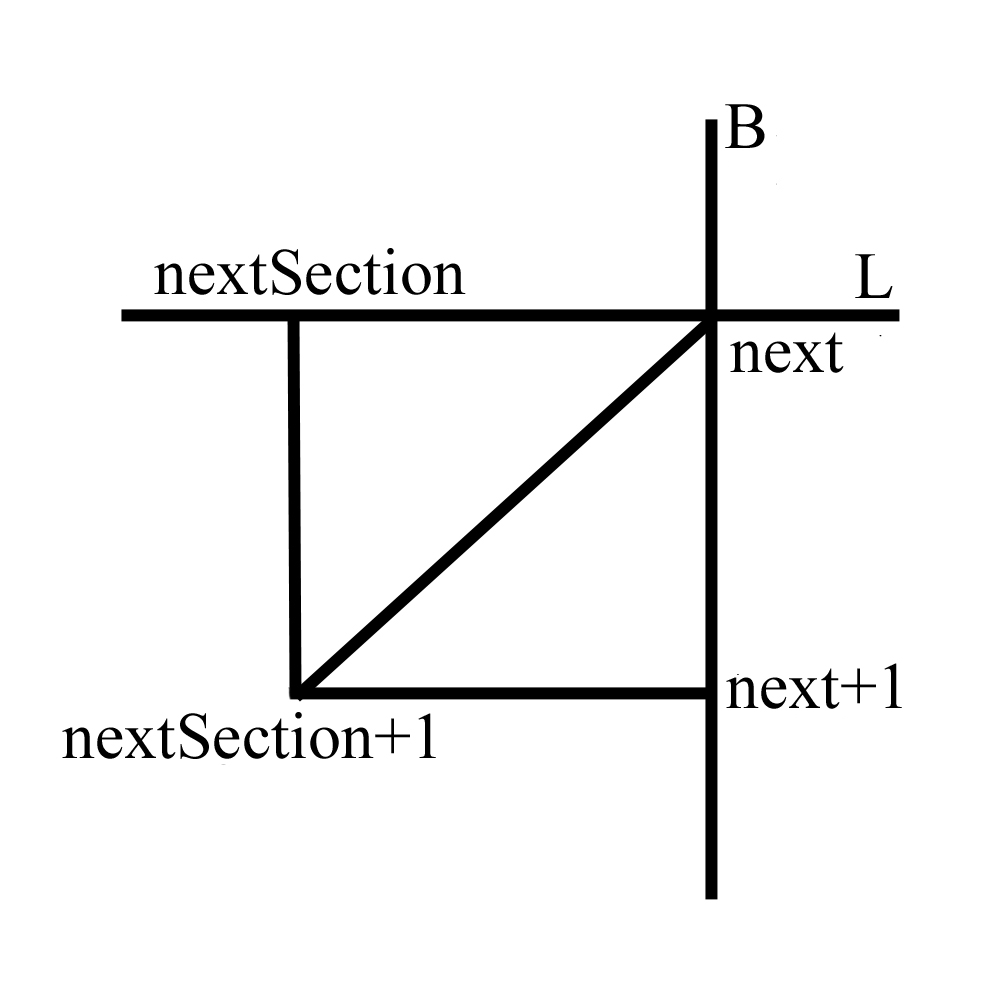
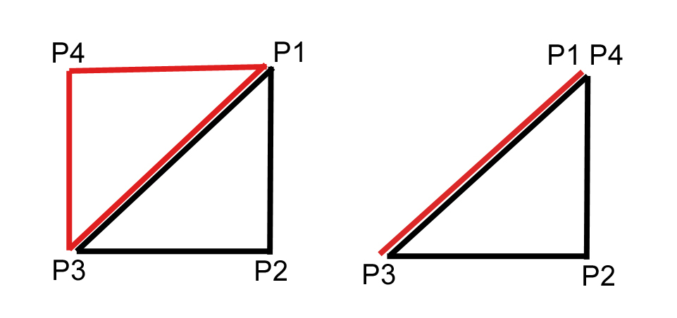

На рисунке показано, как построить модель куба, используя двоичную систему счисления. Мы должны считать от 0 до 8 в десятичной системе, брать двоичное предтавление каждого десятичного числа 0, 1, 2 и тд. до 8, где в двоичном виде 0 берется значение с минусом, там где 1 берется значение со знаком плюс- и заполняем массив вершин. На изображении каждая вершина A, B, C, D и тд. содержит X, Y, Z координату. Например возьмем a = 4 и построим куб заполнив массив вершин, начиная с A(-4, -4, -4) потом B(4, -4, -4) дальше C(-4, 4, -4) и тд. Но в нашем примере координаты X и Z для удобства мы поменяли местами что бы лицевая грань куба была направлена на наблюдателя вдоль оси Z- так проще держать в памяти расположение вершин когда строишь модель куба.
Что бы вычислить нормали к модели, нужно переместить модель в нулевую позицию, что бы центр координат был в центре модели. Затем нормализовать координаты, как в примере ниже. Нормали к поверхности используются при расчетах освещения. Если например модель куба вращается на сцене, то есть вершины умножаются на матрицу повотора, то так же необходимо этим преобразованиям подвергнуть нормали- то есть умножить на матрицу повотора нормали. Одним словом, нормали нужно обрабатывать как вершины. Так как каждая нормаль привязана к вершине, а при повороте (и других преобразованиях) вершина меняет ориентацию в пространстве, то и нормаль нужно подвергнуть тем же преобразованиям, что бы она следовала в пространстве вслед за своей вершиной.
vector3 *vert_buff; vector3 *normal_buff; vert_buff = new vector3[8]; vert_buff_transformed = new vector3[8]; vert_buff[0] = vector3(-4.0f, -4.0f, -4.0f); //A vert_buff[1] = vector3( 4.0f, -4.0f, -4.0f); //B vert_buff[2] = vector3(-4.0f, 4.0f, -4.0f); //C vert_buff[3] = vector3( 4.0f, 4.0f, -4.0f); //D vert_buff[4] = vector3(-4.0f, -4.0f, 4.0f); //E vert_buff[5] = vector3( 4.0f, -4.0f, 4.0f); //F vert_buff[6] = vector3(-4.0f, 4.0f, 4.0f); //G vert_buff[7] = vector3( 4.0f, 4.0f, 4.0f); //H normal_buff = new vector3[8]; normal_buff_transformed = new vector3[8]; normal_buff[0] = Vec3Normalize(vert_buff[0]); normal_buff[1] = Vec3Normalize(vert_buff[1]); normal_buff[2] = Vec3Normalize(vert_buff[2]); normal_buff[3] = Vec3Normalize(vert_buff[3]); normal_buff[4] = Vec3Normalize(vert_buff[4]); normal_buff[5] = Vec3Normalize(vert_buff[5]); normal_buff[6] = Vec3Normalize(vert_buff[6]); normal_buff[7] = Vec3Normalize(vert_buff[7]);
Модель куба 8 вершин в буфере вершин и 12 линий в буфере индексов, которые соединяют эти вершины.
struct vertex {
float x,y,z;
};
enum { A, B, C, D, E, F, G, H };
vertex vert_buff[8] = {
-4.0, -4.0, -4.0, //A
4.0, -4.0, -4.0, //B
-4.0, 4.0, -4.0, //C
4.0, 4.0, -4.0, //D
-4.0, -4.0, 4.0, //E
4.0, -4.0, 4.0, //F
-4.0, 4.0, 4.0, //G
4.0, 4.0, 4.0 }; //H
/*
FONT SIDE BACK SIDE
C - D G - H
| | | |
A - B E - F
*/
unsigned int index_buff[24] = {
//LINES CONNECT FRONT SIDE VERTICES
A, B,
B, D,
D, C,
C, A,
//LINES CONNECT BACK SIDE VERTICES
E, F,
F, H,
H, G,
G, E,
//LINES CONNECT FRONT AND BACK SIDE
A, E,
B, F,
D, H,
C, G };
Модель куба 8 вершин в буфере вершин и 12 треугольников в буфере индексов.
struct vertex {
float x,y,z;
};
enum { A, B, C, D, E, F, G, H };
struct color_rgb {
int r;
int g;
int b;
};
//буфер цветов для всех 8ми вершин
//для окрашивания каждой вершины
//для интерполяции цветов
color_rgb color[8] = {
255, 255, 255,
0, 0, 0,
255, 0, 0,
0, 255, 0,
0, 0, 255,
255, 255, 0,
0, 255, 255,
255, 0, 255 };
//буфер цветов для всех 12 треугольников
//для сплошного затенения
color_rgb color[12] = {
0, 0, 255, //FRONT FACE
0, 0, 255, //FRONT FACE
255, 0, 0, //BACK FACE
255, 0, 0, //BACK FACE
0, 255, 0, //LEFT FACE
0, 255, 0, //LEFT FACE
255, 255, 0, //RIGHT FACE
255, 255, 0, //RIGHT FACE
0, 255, 255, //TOP FACE
0, 255, 255, //TOP FACE
255, 0, 255, //BOTTOM FACE
255, 0, 255 }; //BOTTOM FACE
vertex vert_buff[8] = {
-4.0, -4.0, -4.0, //A
4.0, -4.0, -4.0, //B
-4.0, 4.0, -4.0, //C
4.0, 4.0, -4.0, //D
-4.0, -4.0, 4.0, //E
4.0, -4.0, 4.0, //F
-4.0, 4.0, 4.0, //G
4.0, 4.0, 4.0 }; //H
UINT index_buff[36] = {
/*
front side & back side
C - D G - H
| | | |
A - B E - F
*/
A, C, D,
A, D, B,
F, H, G,
F, G, E,
/*
left side & right side
G - C D - H
| | | |
E - A B - F
*/
E, G, C,
E, C, A,
B, D, H,
B, H, F,
/*
top side & bottom side
G - H E - F
| | | |
C - D A - B
*/
C, G, H,
C, H, D,
E, A, B,
E, B, F };
Модель куба 24 вершины в буфере вершин, 24 текстурных координаты в буфере текстурных координат, и 12 треугольников в буфере индексов. Текстурные координаты приведены в диапазоне от 0 до 63 для использования изображения 64 на 64 пикселя в качестве текстуры. Если у вас будет текстура другого размера, например 256 на 256 пикселей, вам нужно поменять значения 63 на 255 в массиве текстурных координат. В таких API как DirectX или OpenGL используються текстурные координаты от 0.0 до 1.0. К примеру наша текстура имеет разрешение 256 на 256, это значит что 1.0 это полная ширина текстуры- то есть 255, или полная высота текстуры тоже 1.0 равнозначно значению 255.
struct vertex {
float x,y,z;
};
struct tex_coord2
{
int tu, tv;
};
vertex vert_buff[24] = {
-5.000000,-5.000000,-5.000000,
-5.000000,-5.000000,5.000000,
5.000000,-5.000000,5.000000,
5.000000,-5.000000,-5.000000,
-5.000000,5.000000,-5.000000,
5.000000,5.000000,-5.000000,
5.000000,5.000000,5.000000,
-5.000000,5.000000,5.000000,
-5.000000,-5.000000,-5.000000,
5.000000,-5.000000,-5.000000,
5.000000,5.000000,-5.000000,
-5.000000,5.000000,-5.000000,
5.000000,-5.000000,-5.000000,
5.000000,-5.000000,5.000000,
5.000000,5.000000,5.000000,
5.000000,5.000000,-5.000000,
5.000000,-5.000000,5.000000,
-5.000000,-5.000000,5.000000,
-5.000000,5.000000,5.000000,
5.000000,5.000000,5.000000,
-5.000000,-5.000000,5.000000,
-5.000000,-5.000000,-5.000000,
-5.000000,5.000000,-5.000000,
-5.000000,5.000000,5.000000 };
tex_coord2 tex_coord[24] = {
63,63,
63,0,
0,0,
0,63,
0,63,
63,63,
63,0,
0,0,
0,63,
63,63,
63,0,
0,0,
0,63,
63,63,
63,0,
0,0,
0,63,
63,63,
63,0,
0,0,
0,63,
63,63,
63,0,
0,0};
unsigned int index_buff[36] = {
0,2,1, // 1 triangle
2,0,3, // 2 triangle
4,6,5, // 3 triangle
6,4,7, // 4 triangle
8,10,9, // 5 triangle
10,8,11, // 6 triangle
12,14,13, // 7 triangle
14,12,15, // 8 triangle
16,18,17, // 9 triangle
18,16,19, // 10 triangle
20,22,21, // 11 triangle
22,20,23}; // 12 triangle
Параметрическое уравнение сферы
Параметрическое описание сферы так названо потому, что мы строим сферу используя два параметра- широту и долготу. В результате мы получаем меридианы и паралели. К примеру ось сферы проходит вдоль оси Y, и мы наложили на сферу текстуру земного шара. Координаты сферы проходящие от северного полюса к южному (и наоброт) этой сферы с текстурой- могут изменяться от -90 до +90 градусов, или от 0 до 180 градусов, и называються широтой, буква B. Координаты на сфере по окружности т.е. экватор нашей тестуры земного шара, могут меняться от -180 до +180 градусов или от 0 до 360 градусов, и называються долготой, буква L. Меридианы проходят от северного полюса к южному (и наоборот). Паралели прходят паралельно экватору этой сферы от северного полюса к южному (и наоборот).
Рисунке ниже красным цветом обозначены меридианы сферы - широта B.
Рисунке ниже красным цветом обозначены паралели сферы - долгота L.
Один slice сферы показан на рисунке ниже. Этот slice состоит из 10 stacks, и это 20 треугольников.
В математике имееться также еще формула не параметрического описания сферы. Из формулы параметрического описания сферы мы получаем получаем в результате три координаты x,y,z которые и размещаем в пространстве. Потом эти вершины мы можем соединить линиями и получится проволочная модель сферы, или заполнить сферу текстурой. Формула параметрического описания сферы в общем случае выглядит так.
Как создать модель сферы показано ниже.
struct vertex {
float x,y,z;
float tu,tv;
};
struct vector3 {
float x,y,z;
};
vertex *vert_buff;
vector3 *normal_buff;
unsigned int *index_buff;
int nVertCount;
int nTriangleCount;
void Init_Sphere()
{
int slices = 20;
int stacks = 10;
float thetaFac = (2.0f * 3.1415926f) / slices;
float phiFac = 3.1415926f / stacks;
float radius = 8.0f;
nVertCount = (slices + 1) * (stacks + 1);
nTriangleCount = slices * stacks * 2;
vert_buff = new vertex[nVertCount];
normal_buff = new vertex[nVertCount];
int index = 0;
for ( int l = 0; l <= slices; l++ )
{
for ( int b = 0; b <= stacks; b++ )
{
vert_buff[index].x = radius * sinf(phiFac * b) * sinf(thetaFac * l);
vert_buff[index].y = radius * cosf(phiFac * b);
vert_buff[index].z = radius * sinf(phiFac * b) * cosf(thetaFac * l);
vert_buff[index].tu = (float)l / (float)(slices);
vert_buff[index].tv = (float)b / (float)(stacks);
normal_buff[index].x = sinf(phiFac * b) * sinf(thetaFac * l);
normal_buff[index].y = cosf(phiFac * b);
normal_buff[index].z = sinf(phiFac * b) * cosf(thetaFac * l);
index++;
}
}
index_buff = new unsigned int[nTriangleCount * 3];
index = 0;
for ( int l = 0; l < slices; l++ )
{
for ( int b = 0; b < stacks; b++ )
{
int next = l * (stacks + 1) + b;
int nextSection = (l + 1) * (stacks + 1) + b;
index_buff[index] = next;
index_buff[index + 1] = next + 1;
index_buff[index + 2] = nextSection + 1;
index_buff[index + 3] = next;
index_buff[index + 4] = nextSection + 1;
index_buff[index + 5] = nextSection;
index += 6;
}
}
}

Если хотите добится эффекта как на видео ниже, смените код программы как показано в примере.
void CMeshManager::DrawSphere (HWND hwnd)
{
Clear_Backbuffer();
static UINT nTriCount = 1;
if( nTriCount < nTriangleCount)
nTriCount ++;
for (UINT i = 0; i < nTriCount; i++)
{
Пример как использовать данный код для построение сферы можно загрузить из главы Проволочная модель сферы.
В каком порядке происходит добавление вершин в буфер индексов - b (по высоте) добавляется сверху вниз от 0 до 180 градусов, l (по горизонтали) добавляется справа- налево от 0 до 360 градусов поэтому во втором примере текстурные координаты перевернуты по горизонтали. В нормальном виде тестурные координаты идут слева направо по горизонтали. Причем шев сферы идет прямо противоположно с тыльный стороны зрителя (и вершины создаются справа налево если смотреть на сферу сбоку, и по часовой стрелке если смотреть на сферу сверху).
Причем возможны видоизменения этой формулы. В одних случаях расчет координат сферы ведеться в цикле по количеству меридиан и паралелей, то есть сложить сферу в зависимости от количества полигонов которые нужны в результате- например 10 паралелей и 20 меридианов, в зависимости от апроксимации. В других случаях цикл расчета координат сферы построен на радианах- как в примере выше- обход цикла по радианам- от 0 до 180 градусов это широта, и от 0 до 360 градусов это долгота, от 0 до PI и от 0 до PI2. В некоторых книгах приводяться примеры, где цикл организован в виде градусов, а не радиан. Это не верное решение, делать цикл в градусах для расчета координат сферы, так или иначе градусы нужно преобразовывать в радианы для правильного результата. Например если вы пишете software rendering проект- создаете сферу на экране, то расчеты нужно проводить только в радианах.
Если вы построите сферу используя код выше, она будет расположена вертикально- то есть ось сферы будет проходить через ось Y координат- северный полюс сверху, южный снизу. Если использовать код выше, и поменять местами z,y то ось сферы будет расположена горизонтально. Если поменять местами z,x то поменяется место расположения шва сферы.
Если вы переставите значения x, y, z как в примере ниже- сфера будет иметь ось горизонтально расположенную, то есть южный полюс будет перед зрителем на экране, а с обратной противоположной стороны по горизонтали будет северный полюс.
//горизонтально расположенная сфера v[index].p.y = r * sinf(b) * sinf(l); v[index].p.z = r * cosf(b); v[index].p.x = r * sinf(b) * cosf(l);
Попробуйте самостоятельно написать программу вывода сферы, но рисовать на экране только один slice как на рисунке в начале статьи. Затем когда вы нарисовали один slice попробуйте поменять местами координаты x,z и z,y что бы самому посмотреть на результат- где будет находится шов сферы.
Текстурные координаты в примере выше имеют диапазон от 0.0 до 1.0. Поэтому мы делим долготу на PI2 и широту на PI что бы получить значение текстурных координат в этом диапазоне от 0.0 до 1.0.
Если вы построите сферу используя код выше, она будет создаваться по slices справа налево, но можно поменять местами в цикле переменные b,l и тогда сфера будет создаватся по stacks - сверху вниз. В примере кода ниже в цикле местами поменяли значения b,l.
int slices = 20;
int stacks = 10;
float thetaFac = (2.0f * 3.1415926f) / slices;
float phiFac = 3.1415926f / stacks;
float radius = 8.0f;
UINT nVertCount = (slices + 1) * (stacks + 1);
UINT nTriangleCount = slices * stacks * 2;
vertex3 *vert_buff = new vertex3[nVertCount];
int index = 0;
for ( int b = 0; b <= stacks; b++ )
{
for ( int l = 0; l <= slices; l++ )
{
vert_buff[index].v.x = radius * sinf(phiFac * b) * sinf(thetaFac * l);
vert_buff[index].v.y = radius * cosf(phiFac * b);
vert_buff[index].v.z = radius * sinf(phiFac * b) * cosf(thetaFac * l);
vert_buff[index].t.x = 1.0f - ((float)l / (float) slices);
vert_buff[index].t.y = (float)b / (float) stacks;
index++;
}
}
m_nNumIndices = nTriangleCount * 3;
WORD *index_buff = new WORD[m_nNumIndices];
index = 0;
for ( int b = 0; b < stacks; b++ )
{
for ( int l = 0; l < slices; l++ )
{
int next = b * (slices + 1) + l;
int nextSection = (b + 1) * (slices + 1) + l;
index_buff[index] = next;
index_buff[index + 1] = nextSection;
index_buff[index + 2] = nextSection + 1;
index_buff[index + 3] = next;
index_buff[index + 4] = nextSection + 1;
index_buff[index + 5] = next + 1;
index += 6;
}
}
Видео ниже отображает порядок создания треугольников, в случае когда b и l поменяли местами.
Как понятно это был расчет вершин сферы, и текстурных координат. Этими значениями будет заполняться вершинный буфер перед выводом на экран. Но так же необходимо создать соответствующий буфер индексов, а потом выводить модель сферы на экран. Можно по разному организовать вершинный буфер, индексный буфер- есть несколько вариантов. Самый простой приводиться ниже. stacks это количество паралелей, slices это количество меридиан.
int stacks = 10;
int slices = 20;
int numVertices = slices * stacks * 4;
int numTriangles = slices * stacks * 2;
float thetaFac = (2.0f * 3.14159265358979f) / slices;
float phiFac = 3.14159265358979f / stacks;
float r = 15.0;
int index = 0;
for(int l = 0; l < slices; l++)
{
for(int b = 0; b < stacks; b++)
{
float sb = phiFac * b;
float sl = thetaFac * l;
v[index].p.x = r * sinf(sb) * sinf(sl);
v[index].p.y = r * cosf(sb);
v[index].p.z = r * sinf(sb) * cosf(sl);
v[index].tu = (float)l / (float)(slices);
v[index].tv = (float)b / (float)(stacks);
sb = phiFac * (b + 1);
sl = thetaFac * l;
v[index+1].p.x = r * sinf(sb) * sinf(sl);
v[index+1].p.y = r * cosf(sb);
v[index+1].p.z = r * sinf(sb) * cosf(sl);
v[index + 1].tu = (float)l / (float)(slices);
v[index + 1].tv = (float)(b + 1) / (float)(stacks);
sb = phiFac * (b + 1);
sl = thetaFac * (l + 1);
v[index+2].p.x = r * sinf(sb) * sinf(sl);
v[index+2].p.y = r * cosf(sb);
v[index+2].p.z = r * sinf(sb) * cosf(sl);
v[index + 2].tu = (float)(l + 1) / (float)(slices);
v[index + 2].tv = (float)(b + 1) / (float)(stacks);
sb = phiFac * b;
sl = thetaFac * (l + 1);
v[index+3].p.x = r * sinf(sb) * sinf(sl);
v[index+3].p.y = r * cosf(sb);
v[index+3].p.z = r * sinf(sb) * cosf(sl);
v[index + 3].tu = (float)(l + 1) / (float)(slices);
v[index + 3].tv = (float)b / (float)(stacks);
index+=4;
}
}
int baseIndex = 0;
int baseVert = 0;
while (baseVert < numVertices)
{
indices[baseIndex] = baseVert;
indices[baseIndex + 1] = baseVert+1;
indices[baseIndex + 2] = baseVert+2;
indices[baseIndex + 3] = baseVert;
indices[baseIndex + 4] = baseVert+2;
indices[baseIndex + 5] = baseVert+3;
baseIndex += 6;
baseVert += 4;
}
В данном примере r = 15.0 это радиус сферы, необходимый для расчета. 3.14159265358979f это значение Пи. Что бы не делать лишнее умножение на 2 можно взять 2 * Пи значение 6.28318530717958f.
Откуда у сферы берутся "вырожденные" треугольники показано на рисунке ниже.
Слева на рисунке два треугольника в обычном состоянии. Справа на рисунке точки P1 и P4 находятся на полюсе сферы - в одной точке, поэтому другой треугольник в "вырожденном" состоянии.